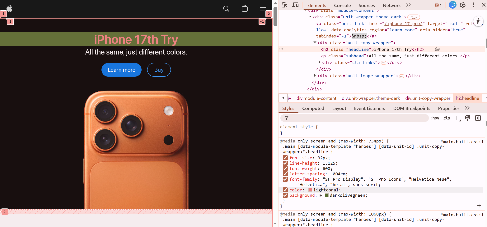

My Dev Tools Vandalism - Apple.com
I used browser developer tools to temporarily "vandalize" the Apple.com website. Below is a screenshot showing my changes. These edits only appeared on my computer and did not affect the actual website.

What I "Vandalized"
Below are some of the changes I made to the website using the browser's developer tools.
- I edited the text heading for the main homepage as well as the paragraph text.
- The CSS properties I modified were the font color and heading background.
- I founded amusing to edit the text and just play around with the font color.
- I'm still trying to understand why some changes worked and some didn't and some of the restrictions.
- Chose the changes of on the heading because it was one of the first thing you see in the homepage and wanted to edit it.
- I can see the relation between HTML and CSS and how they work hand and hand to make the changes.
- I believe I have a better understanding of how dev tools can be utiized specially when I start working on my own webpages and styling it.